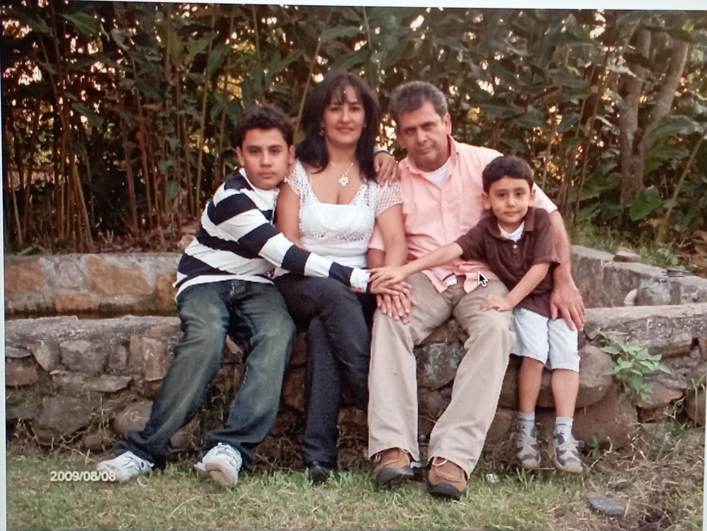
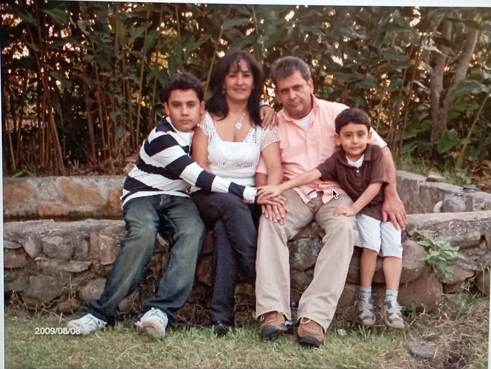
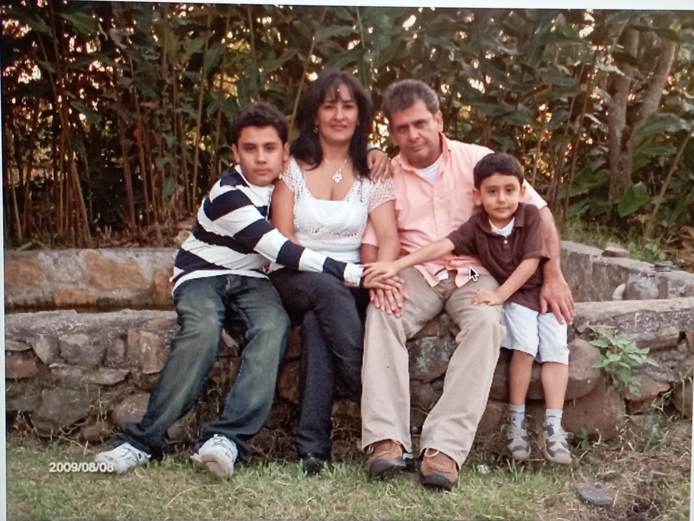
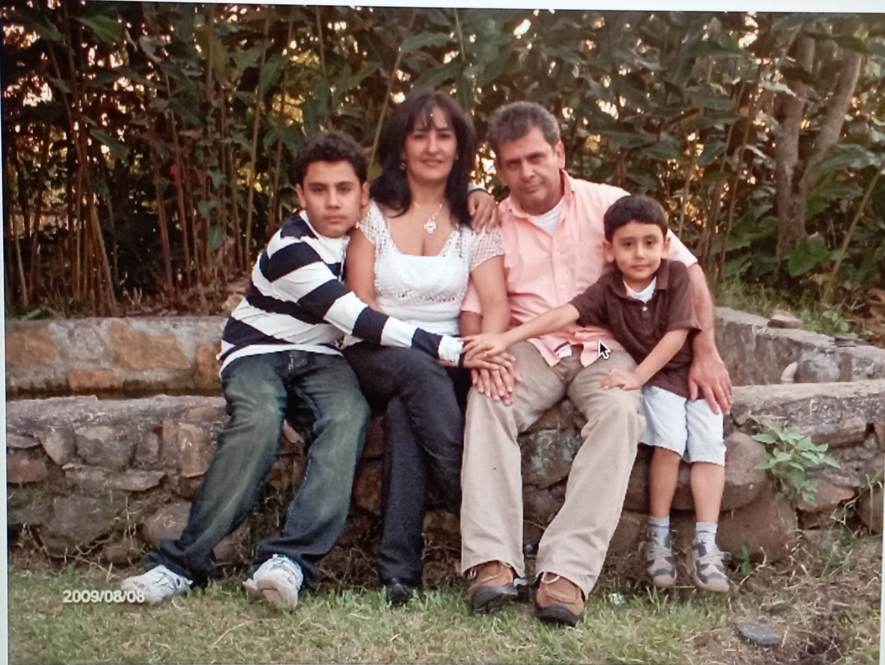

 

Mi madre hermosa, sé que no estamos cerca en este momento, pero no quería dejar pasar este día tan importante. Aunque no lo creas, eres la mejor mamá del mundo. Piensas que, por lo que ocurrió en años pasados, yo te tengo rabia, y es todo lo contrario. Sé que hemos tenido muchas peleas, pero el amor y el cariño que te tengo es más grande que todos los problemas. Te agradezco todas las enseñanzas que me has dado. Te agradezco que siempre estés para mí, para ayudarme. Te agradezco que estés cuando no tengo ánimos. Pero lo más importante: GRACIAS POR SER MI MAMÁ. (P.D.: Sé que no te llamo constantemente, pero eso no significa que no te tenga tanto cariño. Sé que debo mejorar en ese aspecto de tener más comunicación contigo). Quiero cumplirte tus sueños más profundos, quiero comprarte eso que tanto anhelas, quiero llevarte a conocer todo el mundo. Por eso, te pido que me dures muchos años más, ojalá toda la vida. Mientras llega ese momento, por este medio te quiero expresar el cariño tan grande que te tengo. 💕